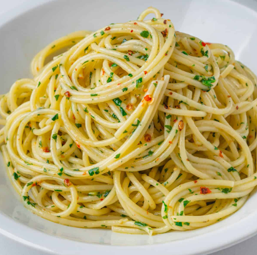

aglio Olio Recipe
Home

Spaghetti Aglio e Olio, a classic Italian pasta dish meaning "spaghetti with garlic and oil," has a history rooted in Neapolitan cuisine, particularly associated with "cucina povera" or peasant food, making it a historically economical and easily prepared meal. While its origins are somewhat murky due to its humble beginnings, it's believed to have emerged from the Campania region of Italy, possibly even earlier than the 1800s, and was a favorite of King Ferdinand IV of Bourbon.
- 1 pound uncooked spaghetti
- 1 pound uncooked spaghetti
- 6 cloves garlic, thinly sliced
- ¼ teaspoon red pepper flakes, or to taste
- salt and freshly ground black pepper to taste
- ¼ cup chopped fresh Italian parsley
- 1 cup finely grated Parmigiano-Reggiano cheese
- Bring a large pot of lightly salted water to a boil. Cook spaghetti in the boiling water, stirring occasionally until cooked through but firm to the bite, about 10 to 12 minutes. Drain and transfer to a pasta bowl.
- While the pasta is cooking, combine olive oil and garlic in a cold skillet.
- Cook over medium heat to slowly toast garlic, about 10 minutes. Reduce heat to medium-low when olive oil begins to bubble. Cook and stir until garlic is golden brown, about another 5 minutes. Remove from heat.
- Stir red pepper flakes, salt, and black pepper into pasta.
- Pour in hot olive oil and garlic, and sprinkle on Italian parsley and half of the Parmigiano-Reggiano cheese; toss until combined.
- Serve pasta topped with the remaining Parmigiano-Reggiano cheese.